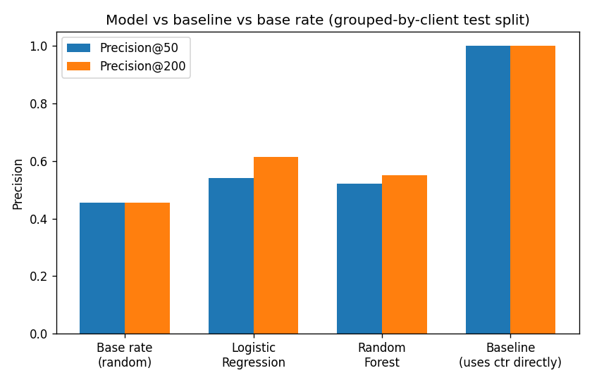

We asked which visible pages under-capture clicks relative to peers at the same search position, using FlyRank's anonymized 30,000-page starter search dataset and, to check generalization, 187,466 real rows from FlyRank's full search warehouse. We built a transparent rule-based baseline (a page's click-through-rate gap below its position tier's median, weighted by traffic) and a Random Forest model trained only on indirect, pre-CTR-observation signals — position, traffic volume, content age, word count — deliberately excluding CTR itself. On a client-grouped holdout split, the model cleared the base rate on the starter slice (Precision@200 of 0.55 vs. a 0.455 base rate) and performed substantially better at warehouse scale (Precision@200 of 0.875 vs. a 0.250 base rate), while the baseline scored near-perfect by construction in both cases, a difference we explain rather than celebrate. Along the way, we found that a naive random train/test split overstated the model's real precision by 42 points versus the honest client-grouped split — a concrete demonstration of why validation design matters as much as model choice. The result is a decision-support ranking, not a causal or predictive claim, intended to help a content editor with limited time choose which pages to review first.
Content teams can't manually review every page a site publishes. When search visibility exists but clicks don't follow — a page shows up, gets impressions, but people scroll past it — that's a specific, fixable-looking problem: the title, meta description, or on-SERP snippet may not be earning the click the position deserves. But "low CTR" only means something relative to where a page ranks: a 2% click-through rate is excellent at position 15 and poor at position 2. A useful system has to compare pages to their true peers, not to a single global threshold.
This work supports one decision: which page does a content editor open first, out of thousands, when they have time to review a handful this week.
We used the FlyRank ML Internship starter dataset (content_refresh_anonymized.csv): 30,000 pseudonymized content items across 32 clients, with trailing-90-day search metrics from Google Search Console. All identifiers (content_id, client_id) are pseudonyms used only for grouping and splitting, never as model features.
We restricted analysis to pages with at least 500 impressions in the window and a real recorded average position (excluding rows where position data was unavailable) — 16,726 pages met this bar. This floor exists so any click-through-rate comparison rests on enough traffic to trust, not noise from a handful of impressions.
trend_direction and trend_pct (these are the columns our label would be circularly derived from, per the dataset's own documentation); CTR itself from the model's feature set (see Methodology); and any product-decision flag — none are shipped in this release, by design, so there was nothing to accidentally leak in.
To check whether the starter-slice findings generalize, we repeated the full pipeline on real warehouse data: two mid-panel months (February and April 2026, deliberately not adjacent, never the final/_sample month per the dataset's own leakage warning) from FlyRank/internship-warehouse's fact_content_daily_performance table, aggregated to content-client-month grain the same way as the starter slice. This produced 187,466 candidate rows across 50 clients — roughly 11× the starter dataset's scale.
Before encoding any rule, we checked two signals against real bucket tables:
Signal A — CTR varies by position tier. Median CTR mostly falls with weaker position (page_1: 0.24%, striking: 0.17%, page_3_5: 0.09%, deep: 0.00%), but the smallest tier (top_3, n=458) scored below page_1 (n=7,064) — the data dictionary itself flags this tier's low volume floor as unreliable for exact ranking. We trusted the tier signal for the bulk of pages, not the exact order at the extreme.
Signal B — staleness predicts CTR underperformance. The two large, trustworthy freshness buckets differed by only ~2.7 percentage points (49.1% vs. 46.4% underperform rate) — a clearly negative result. Staleness plausibly drives FlyRank's separate refresh flag, but it does not meaningfully predict CTR-specific underperformance in this data, so we left it out of our score entirely. A clean negative that simplified the model.
underperform_flag: 1 when a page's CTR sits below the median CTR of other pages at its own position tier. This is an observed, current-window comparison — not a future outcome, and not derived from any FlyRank product decision.
score = ctr_gap × impressions_90d, with one reason code (ctr_gap_vs_position_tier) and one action label (review_title_meta_snippet). Because the label is thresholded directly from ctr_gap, this baseline effectively measures the same quantity the label is built from — it will score near-perfect, and we explain why below rather than treat that as a win.
Random Forest (300 trees, max depth 8, seed 42), trained on an honest feature set that excludes CTR entirely: impressions_90d, avg_position, content_age_days, days_since_last_update, word_count, content_type, main_intent, position_tier. The real question this model answers: before carefully measuring a page's click-through rate, can cheaper, indirect signals already hint at which pages are likely underperforming?
Split grouped by client_id (70/30, zero client overlap between train and test, verified directly). We chose this over a random row split because pages from the same client likely share template and writing-style patterns that a random split would let the model memorize rather than genuinely learn.
We tested this choice directly: the same model trained and evaluated under a naive random split reported Precision@50 of 0.94 — nearly double the grouped-split number of 0.52. That 0.42-point gap is memorization, not skill, and it's the single most important methodological finding in this project.
We deliberately re-added the label-derived ctr_gap column to the final honest model as an attack test: ROC AUC jumped from 0.658 to 1.000, confirming the earlier exclusion was correct. Full attack checklist (timeline, label-derived features, product flags, population selection, grouped split, base rate, feature-importance sanity check, out-of-fold metrics) passed.
All numbers below are on the same client-grouped holdout test split (n = 1,461 pages, 9 held-out clients), base rate 0.455.
| Method | ROC AUC | Precision@50 | Precision@200 |
|---|---|---|---|
| Baseline (ctr_gap × impressions) | 1.000 | 1.00 | 1.000 |
| Logistic Regression (honest features) | 0.564 | 0.54 | 0.615 |
| Random Forest (honest features) | 0.658 | 0.52 | 0.550 |

What the model leans on: feature importances are dominated by avg_position (0.282), word_count (0.184), content_age_days (0.176), and impressions_90d (0.143) — all plausible proxies for underperformance, none suspiciously dominant in a way that suggested a hidden leak.
Errors: the model was wrong on 42.3% of the test set. Hand-reviewed wrong cases were consistently borderline — pages at mediocre positions with modest traffic that could plausibly land on either side of their tier's median CTR for reasons the honest features can't see (title quality, snippet wording, search-intent match). That's the honest ceiling of predicting CTR-underperformance without looking at CTR.
Yes — and more strongly than the starter slice suggested. Re-running the identical pipeline (honest features, client-grouped split, same label construction) on 187,466 real warehouse rows across 50 clients produced a substantially stronger result than the 30k-row starter slice:
| Metric | Starter CSV (30k rows, 32 clients) | Warehouse (187k rows, 50 clients, 2 months) |
|---|---|---|
| Test set size | 1,461 | 51,566 |
| Base rate | 0.455 | 0.250 |
| Random Forest ROC AUC | 0.658 | 0.861 |
| Random Forest Precision@200 | 0.550 | 0.875 |
The honest-feature Random Forest's Precision@200 more than doubled the gap over its base rate at warehouse scale (0.875 vs. a 0.250 base rate — a 3.5× lift) compared to the starter slice (0.550 vs. 0.455 — barely above chance by comparison). The most likely explanation: with roughly 11× more training data, the model can learn finer, more reliable position/traffic/freshness interaction patterns that a 30k-row sample was simply too small and noisy to support. This is genuine evidence the underlying signal is real, not an artifact of a small starter sample — full results in w08_warehouse_scale_model.ipynb.
Every claim in this paper is framed as observed, measured, or decision-support — never causal, never predictive of the future, never a claim about how a search engine works internally.
The action playbook ranks the honest grouped-split Random Forest's top-scored pages, each carrying a plain-word reason code (weak_position_high_traffic, thin_content_visible, or model_flagged_pattern) and one action: review_title_meta_snippet.
At Precision@50 (0.52), an editor reviewing the top 50 pages this week should expect roughly half to be genuine CTR-gap cases — modestly, but meaningfully, better than picking 50 pages at random (base rate 0.455). Before acting on any row, a human should confirm: does the page's title/snippet genuinely look weak, is the traffic volume comfortably above the 500-impression floor, and does the reason code make sense on inspection? High model scores are never a diagnosis by themselves — this queue prioritizes attention, it doesn't replace editorial judgment.
Every number in this paper traces back to a committed, executed notebook in the repository:
Random seed 42 used throughout (data split, Logistic Regression, Random Forest). Metrics receipts: work/outputs/w07_metrics.json, work/outputs/w08_warehouse_metrics.json.